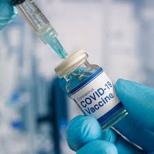

اللقاح
أدى تفشي فيروس كورونا إلى تسارع جهود العلماء لتطوير لقاح مضاد للفيروس، حيث بدأت الأبحاث في أوائل عام 2020 بعد الكشف عن الجينوم الخاص بالفيروس.
اعتمدت اللقاحات التي تم تطويرها على تقنيات حديثة مثل تقنية المستخدمة في لقاحات فايزر وموديرنا، وتقنيات الفيروس الغدي المستخدمة في لقاح أسترازينيكا وسينوفارم.
شهد العالم في أواخر عام 2020 بداية إنتاج اللقاحات بكميات كبيرة بعد الحصول على الموافقات الدولية، وبدأت عمليات التطعيم بشكل واسع في عام 2021.
لم يكن تطوير اللقاح مجرد إنجاز علمي، بل كان إنجازًا تاريخيًا في سرعة الاستجابة للأوبئة. ساعدت هذه اللقاحات في تقليل عدد الإصابات والوفيات بشكل كبير
ومهدت الطريق للعودة التدريجية إلى الحياة الطبيعية.
لعبت الحكومة دورًا محوريًا في تأمين اللقاحات من مصادر متعددة وتوزيعها على المواطنين بالمجان، مع إعطاء الأولوية للفئات الأكثر عرضة للخطر، مثل كبار السن وأصحاب الأمراض المزمنة
كما شجعت حملات التوعية المواطنين على تلقي اللقاح للمساهمة في تحقيق المناعة المجتمعية والقضاء على الفيروس بشكل كامل."
